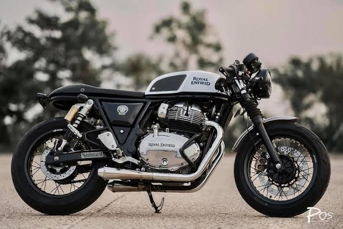

Basic Information
Bike: Royal Enfield Continental GT 650, GT stands for Gran Turismo, It is an Italian phrase: Gran = Grand, Turismo = Touring So, Gran Turismo means "Grand Touring.", Type: Café Racer, Manufacturer: Royal Enfield, Engine: 648 cc, Parallel Twin, Cooling: Air & Oil Cooled, Fuel System: Electronic Fuel Injection (EFI), Transmission: 6-Speed Manual, Clutch: Slip & Assist Clutch, Fuel Tank Capacity: 12.5 Litres, Kerb Weight: Approximately 214 kg.
Engine Specifications
Specification Value, Engine 648 cc Parallel Twin, Maximum Power 47 PS (46.4 hp) @ 7250 rpm, Maximum Torque 52.3 Nm @ 5150 rpm, Gearbox 6-Speed, Top Speed 165–170 km/h (stock), 0–100 km/h Around 6 seconds.
Advantages
Beautiful classic café racer styling, Powerful and smooth twin-cylinder engine, Excellent highway performance, Huge aftermarket support, Great exhaust sound, Reliable engine, Disadvantages, Heavy in city traffic, Forward-leaning riding posture can be tiring, Small 12.5 L fuel tank, Tube-type spoke wheels on many variants.
Performance
Comfortable cruising: 100–120 km/h, Best highway cruising: 90–110 km/h, High-speed stability: Excellent, Vibration: Very low for a Royal Enfield.
Features
LED Tail Lamp, Semi-Digital Instrument Cluster, Tripper Navigation (newer variants), USB Charging (newer models), Electric Start, ABS.TY